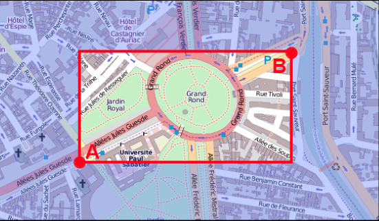

Liste des poteaux d’arrêts
## Principe
Cette API permet d’obtenir des listes d’arrêts.
L’ensemble des arrêts d’un réseau, d’une zone géographique, ou d’une zone d’arrêt.
## Mode d’appel et Paramètres
URL : http://pt.data.tisseo.fr/stopPointsList?...paramètres...
| Nom | Description du paramètre | Requis ? | Valeur défaut |
|---|---|---|---|
| key | Valeur de la clef | Oui | aucune |
| network | Opérateur de transport | Non | Tisséo |
| srid | Numéro SRID du référentiel de projection spatial. Voir http://en.wikipedia.org/wiki/SRID | Non | 4326 |
| bbox | Filtre pour les arrêts dont les données GPS sont comprises dans ce bounding box | Non | |
| sortByDistance | Tri résultats selon la distance au centre de la bounding box (0,1) | Non | 0 |
| number | Filtre sur le nb maxi de résultats à retourner | Retourne les résultats | tous |
| format | Désigne le format de sortie (xml/json) | Non | xml |
| displayDestinations | Retourne en plus les destinations de chaque poteau (0/1) | 0 : Pas de destinations | |
| displayLines | Retourne en plus les lignes de chaque destinations (0/1) | Non | 0 : Pas de lignes |
| displayCoordXY | Retourne en plus les coordonnées de chaque arrêt (poteau d’arrêt et arrêt logique) (0/1) | Non | 0 : Pas de coordonnées |
| lineId | Filtre sur les arrêts de la ligne uniquement. | Non | |
| stopAreaId | Filtre sur la zone d’arrêt uniquement definie | Non |
Règles de gestion
- lineId est l’id récupéré par la requête de liste des lignes.
- Si lineId est passé en plus avec terminusId, dans ce cas le filtre porte sur tous les itinéraires de cette ligne ayant ce terminusId.
- Le srid permet à la fois de modifier le système de coordonnées des XY des zones d’arrêts et de préciser dans quel référentiel la bbox est exprimée.
-
Format attendu pour une bbox:
longitude pt A, latitude pt A, longitude point B, latitude point B,
où A et B sont positionnés comme sur le schéma suivant :  Représentation d’une bbox sur un fond cartographique
Exemple en WGS84 (SRID 4326) le système GPS et encodé en URL : bbox=1.4338121%2C43.5944292%2C1.4538121%2C43.6144292
-
Les différentes options et filtres peuvent être combinés ensemble :
Paramètre Valeurs possibles network Tisséo, ALL srid 4326, 900913, … format json, xml
Réponse
### 1. Requête stopPointsList XML
xml
<?xml version="1.0" encoding="UTF-8"?>
<physicalStops expirationDate="2012-09-21 3:45" xmlns:xsi="http://www.w3.org/2001/XMLSchema-instance" xsi:noNamespaceSchemaLocation="http://pt.data.tisseo.fr/xsd/StopPointsList.xsd">
<physicalStop id="3377699720884578" name="Armentières" x="531237.00859954499" y="1841469.9583295723">
<operatorCodes>
<operatorCode value="201" network="Tisséo"/>
</operatorCodes>
<destination id="1970324837186881" cityName="LABEGE" name="Centre commercial">
<line id="11821949022345002" color="(86,63,0)" name="Université Paul Sabatier / St-Orens Lycée" shortName="108" network="Tisséo" />
</destination>
<destination id="1970324837185279" cityName="SAINT-ORENS-DE-GAMEVILLE" name="St-Orens Lycée">
<line id="11821949022345002" color="(86,63,0)" name="Université Paul Sabatier / St-Orens Lycée" shortName="108" network="Tisséo" />
</destination>
<destination id="1970324837185012" cityName="TOULOUSE" name="Université Paul Sabatier">
<line id="11821949022345002" color="(86,63,0)" name="Université Paul Sabatier / St-Orens Lycée" shortName="108" network="Tisséo" />
</destination>
<stopArea id="1970324837186871" cityName="TOULOUSE" name="Armentières" x="531244.993561" y="1841463.974601"/>
</physicalStop>
<physicalStop id="3377699722914784" name="Barrière de Paris" x="527098.98256426631" y="1847622.9563400263">
<operatorCodes>
<operatorCode value="514" network="Tisséo"/>
</operatorCodes>
<destination id="1970324838834159" cityName="TOULOUSE" name="Glacière Sesquières">
<line id="11821949023707108" color="(38,206,255)" name="Barrière de Paris / Glacière Sesquières" shortName="110" network="Tisséo" />
</destination>
<stopArea id="1970324837185046" cityName="TOULOUSE" name="Barrière de Paris" x="527035.976081" y="1847601.499820"/>
</physicalStop>
</physicalStops>
### 1. Requête stopPointsList JSON
json
{
"expirationDate": "2012-09-21 3:45",
"physicalStops": {
"physicalStop": [
{
"id": "3377699720884578",
"name": "Armentières",
"x": "531237.00859954499",
"y": "1841469.9583295723",
"operatorCodes": [
{
"operatorCode": {
"value": "201",
"network": "Tisséo"
}
}
],
"destinations": [
{
"cityName": "LABEGE",
"id": "1970324837186881",
"name": "Centre commercial",
"line": [
{
"color": "(86,63,0)",
"id": "11821949022345002",
"name": "Université Paul Sabatier / St-Orens Lycée",
"shortName": "108",
"network": "Tisséo"
},
{}
]
},
{
"cityName": "SAINT-ORENS-DE-GAMEVILLE",
"id": "1970324837185279",
"name": "St-Orens Lycée",
"line": [
{
"color": "(86,63,0)",
"id": "11821949022345002",
"name": "Université Paul Sabatier / St-Orens Lycée",
"shortName": "108",
"network": "Tisséo"
},
{}
]
},
{
"cityName": "TOULOUSE",
"id": "1970324837185012",
"name": "Université Paul Sabatier",
"line": [
{
"color": "(86,63,0)",
"id": "11821949022345002",
"name": "Université Paul Sabatier / St-Orens Lycée",
"shortName": "108",
"network": "Tisséo"
},
{}
]
},
{}
],
"stopArea": {
"cityName": "TOULOUSE",
"id": "1970324837186871",
"name": "Armentières",
"x": "531244.993561",
"y": "1841463.974601"
}
},
{
"id": "3377699722914784",
"name": "Barrière de Paris",
"x": "527098.98256426631",
"y": "1847622.9563400263",
"operatorCodes": [
{
"operatorCode": {
"value": "514",
"network": "Tisséo"
}
}
],
"destinations": [
{
"cityName": "TOULOUSE",
"id": "1970324838834159",
"name": "Glacière Sesquières",
"line": [
{
"color": "(38,206,255)",
"id": "11821949023707108",
"name": "Barrière de Paris / Glacière Sesquières",
"shortName": "110",
"network": "Tisséo"
},
{}
]
},
{}
],
"stopArea": {
"cityName": "TOULOUSE",
"id": "1970324837185046",
"name": "Barrière de Paris",
"x": "527035.976081",
"y": "1847601.499820"
}
},
{}
]
}
}
## Exemples d’utilisation
Exemples de requêtes :
1. Liste de tous les poteaux du réseau tisséo au format XML
http://pt.data.tisseo.fr/stopPointsList?key={your_key}
- Liste de tous les poteaux de ce stopAreaId du réseau tisséo au format XML
http://pt.data.tisseo.fr/stopPointsList?&key={your_key}&stopAreaId=1970329131943016&network=Tisséo
- Liste de tous les poteaux du réseau tisséo au format JSON
http://pt.data.tisseo.fr/stopPointsList?&key={your_key}&format=json
- Liste de tous les poteau d’arrêts d’un arrêt commercial où passe une ligne donnée
http://pt.data.tisseo.fr/stopPointsList?&key={your_key}&stopAreaId=1970324837184808&displayLines=1&lineId=11821949021891652
- Liste de tous les poteaux et les destinations du réseau tisséo au format JSON
http://pt.data.tisseo.fr/stopPointsList?&key={your_key}&format=json&displayDestinations=1
- Liste de tous les poteaux et des destinations dans une bounding box pour un srid donnée du réseau tisséo au format JSON.
http://pt.data.tisseo.fr/stopPointsList?&key={your_key}&format=json&displayDestinations=1&srid=900913&bbox=158019.352839%2C5403458.895141%2C163077.902207%2C5404988.302709